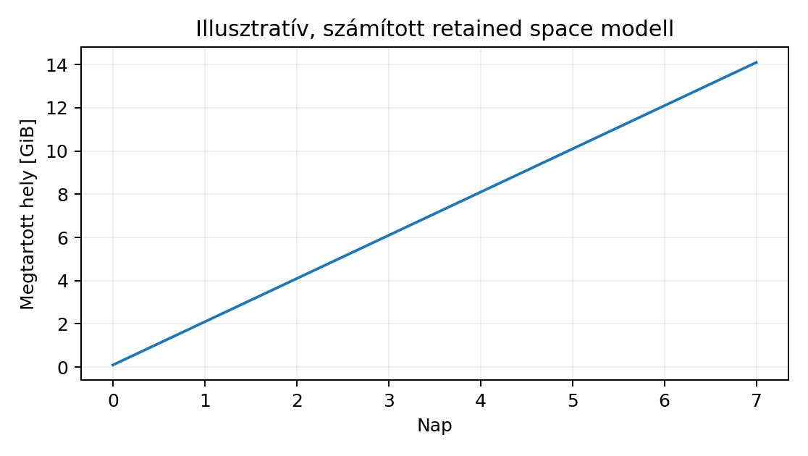

A snapshot az a művelet, amellyel egy tárolórendszer egy adott időpontbeli állapotot rögzít anélkül, hogy a teljes adathalmazt azonnal lemásolná. A gyakorlatban ez azt jelenti, hogy a snapshot nem független másolat, hanem az eredeti adattal közös blokkokra épülő, időbeli állapotreferencia. A snapshot ezért gyors és helytakarékos, de önmagában nem véd a lemezhiba, a pool-szintű sérülés vagy a véletlen törlés ellen. A backup akkor független, ha külön tárolóra vagy legalább külön anonimitással bíró, fizikailag eltérő helyre kerül. A d093-as alfejezetben a snapshotot, a klónt és a send/receive replikációt a filesystem-szintű CoW (copy-on-write) modellben vizsgáljuk.
A snapshot egy olyan olvasható, esetenként írható, időponthoz kötött nézet, amely a tárolórendszer CoW mechanizmusát használja. A Btrfs-ben és az OpenZFS-ben a snapshot a fájlrendszeren belüli logikai objektum (subvolume vagy dataset), amely a kiindulási állapot metadatmutatóit örökli. A módosítás során az eredeti blokkok nem íródnak felül, hanem új blokkok keletkeznek, és a régi blokkok mindaddig megmaradnak, amíg a snapshot hivatkozik rájuk. A Btrfs-ben a snapshot a subvolume-ból jön létre, és -r kapcsolóval read-only verzió is képezhető. Az OpenZFS-ben a snapshot a dataset pillanatképe, és szintén a pool-on belüli hivatkozás.
Az LVM snapshot ettől eltérően blokk-szintű. A hagyományos LVM-thick snapshot külön, előre lefoglalt COW-területen tárolja a snapshot létrehozása után módosított blokkok eredeti tartalmát. Az LVM-thin snapshot ezzel szemben egy thin pool-ban osztozik a forráslogikai kötettel, és a módosított blokkok ugyanabban a pool-ban allokálódnak. A fájlrendszer-szintű Btrfs/ZFS snapshot és a blokk-szintű LVM-thin snapshot is CoW-alapú, de a törlési szemantika, a teljesítményprofil és a klónozási lehetőségek eltérnek. A Btrfs/ZFS snapshot közvetlenül mountolható, nem igényel külön eszközaktiválást; az LVM snapshotot viszont külön device mapper eszközként kell kezelni.
A clone olyan írható leszármazott, amely a kiindulási snapshotból vagy subvolume-ból osztozik az eredeti adatblokkokon. A klón a Btrfs-ben egy snapshot, amelyet nem read-only flaggel hoznak létre, így az új nevében írható. Az OpenZFS-ben a clone a snapshotból létrehozott írható dataset. A klón és a forrás kezdetben ugyanazokra a blokkokra mutat, de a későbbi írások a klónban vagy a forrásban új blokkokat foglalnak le, tehát a közös rész fokozatosan csökken.
A send/receive egy stream-alapú replikációs
mechanizmus. A Btrfs btrfs send egy read-only snapshotból
vagy subvolume-ból generál streamet, amelyet a
btrfs receive a céloldalon hoz létre. Az OpenZFS
zfs send és zfs receive ugyanezt a szerepet
látja el. Az incremental chain a send/receive azon tulajdonsága, hogy
egy korábbi snapshot mint szülő (-p parent) segítségével
csak a két állapot közötti változásokat továbbítja. Ez a láncolat
feltételezi, hogy a céloldalon a szülő snapshot elérhető és sértetlen.
Az alábbi ábra blokkszinten mutatja a három mechanizmust: a közös
blokkokat, a retained space keletkezését és az incrementális lánc
szülőfüggését.
send -p csak a B4′ és B7 blokkot viszi, a célon a szülő
snapshotnak léteznie kell (sematikus, a blokkszám
illusztratív)A snapshot nem foglal le a létrehozás pillanatában a teljes adatmérettel megegyező helyet. A kiindulási adattal közös blokkokat továbbra is az eredeti subvolume/dataset blokkjai adják, a snapshot csak metadatokat és a megőrzött blokkokra mutató hivatkozásokat tartalmaz. Amikor az origin (eredeti) módosul, a CoW miatt az érintett blokkok új fizikai helyre kerülnek, a régi blokkok viszont a snapshot számára megmaradnak. A retained space tehát a snapshot által még hivatkozott, de az originból már újraírt vagy törölt blokkok összessége, plusz a snapshot metadatok.
Egyszerű, hipotetikus kapacitásmodell:
ahol
a snapshot létrehozása óta eltelt napok vagy változási ciklusok száma,
az adott ciklusban módosított és snapshot által megtartott blokkok
mérete (GiB),
a snapshot metadatok. A valóságban a snapshot törlésekor felszabaduló
hely attól függ, hogy hány más snapshot vagy klón hivatkozik még a
blokkra. A Btrfs és a ZFS esetén a btrfs qgroup show vagy
zfs list -o space mutatja a tényleges, allokált és
hivatkozott méreteket; a tényleges futtatás előtt a modell csak
becslés.
Az alábbi ábra egy számított példa: 100 GiB origin, napi 2 GiB módosítás, 7 napig, GiB.

| Nap | Változás [GiB] | Retained space [GiB] |
|---|---|---|
| 0 | 0 | 0.1 |
| 1 | 2 | 2.1 |
| 2 | 2 | 4.1 |
| 3 | 2 | 6.1 |
| 4 | 2 | 8.1 |
| 5 | 2 | 10.1 |
| 6 | 2 | 12.1 |
| 7 | 2 | 14.1 |
A filesystem-szintű snapshot atomikus abban az értelemben, hogy a fájlrendszer metadatainak és a CoW struktúrának egy konzisztens állapotát rögzíti. Ez azonban nem jelenti automatikusan az alkalmazás konzisztenciáját. Ha egy adatbázis-kezelő vagy egy C++ alkalmazás éppen ír, akkor a snapshotba kerülhet olyan állapot, ahol a pufferelt adatok egy része még nem került a háttértárra, vagy egy több fájlból álló művelet félig kész.
A quiesce az alkalmazás vagy a fájlrendszer író
tevékenységének átmeneti leállítása a konzisztens pillanatkép érdekében.
Btrfs-en a subvolume snapshot maga is atomikus, és ugyanannak a
fájlrendszernek a metaadatait írja; egy előtte kiadott
fsfreeze mellett a snapshot a felengedésre várhat, a
felengedés pedig csak a snapshot után következne – a labor elakadna.
Btrfs-en ezért alkalmazásszintű quiesce és flush után,
fsfreeze nélkül készítjük a snapshotot:
# labhost d093: root (UID 0), izolált labVM, Btrfs mount /mnt/lab-d093
# 1) az alkalmazás írásainak megállítása (stop vagy saját flush/lock API)
systemctl stop lab-d093-app.service
# 2) a fájlrendszer pufferelt írásainak kiírása
sync -f /mnt/lab-d093
# 3) atomikus read-only snapshot
btrfs subvolume snapshot -r /mnt/lab-d093/app \
/mnt/lab-d093/app-snap-2025-01-01T00:00Z
systemctl start lab-d093-app.serviceAz fsfreeze blokkszintű snapshotnál (például LVM, a
fájlrendszeren kívül készülő pillanatkép) indokolt: kiüríti a
pufferelt írásokat, majd leállítja a további írásokat. Ilyenkor a
felengedésnek hibatűrőnek kell lennie: trap minden kilépési
útra, külső watchdog, időkorlát, és csak izolált labdisken:
# labhost d093: root (UID 0), csak izolált labdisk, ext4 az LVM LV-n
MP=/mnt/lab-lvm
cleanup() { fsfreeze -u "$MP" 2>/dev/null || true; }
trap cleanup EXIT INT TERM
# külső watchdog: 120 s múlva akkor is felenged, ha a shell elhalt
systemd-run --on-active=120s --unit=lab-unfreeze /usr/sbin/fsfreeze -u "$MP"
fsfreeze -f "$MP"
timeout 60 lvcreate -s -L 1G -n lab-snap labvg/lablv
cleanup
systemctl stop lab-unfreeze.timer
trap - EXIT INT TERMHa a fájlrendszer mégis befagyva maradt (a shell megszakadt, a
watchdog nem futott), egy másik konzolról
fsfreeze -u /mnt/lab-lvm oldja fel; a befagyott mountra író
folyamatok addig D állapotban várnak. Az adatbázisok esetén a
fájlrendszer-szintű quiesce gyakran kevés; a PostgreSQL 15+
pg_backup_start()/pg_backup_stop()
függvényeivel vagy a pg_basebackup eszközzel biztosítja,
hogy a WAL és a data fájlok együttesen visszajátszható állapotba
kerüljenek (a régi pg_start_backup() a 15-ös verzióban
megszűnt; az Ubuntu 24.04 csomagja a 16-os főverzió, a labhoston
psql -V mutatja; részletek a 20.3-ban). A
fájlrendszer-szintű snapshot akkor használható adatbázismentésre, ha az
alkalmazás saját tranzakciós logikája a snapshot előtt flush-t és
szükség esetén írási zárat ad.
Az alábbi példa egy izolált labdisken dolgozik, ahol a
lab-d093-btrfs név egyértelműen a labor saját disposable
lemezére mutat. A módosító parancsok csak ezt a disk-et használják.
#!/usr/bin/env bash
set -euo pipefail # a send | receive pipeline bármely hibája megállít
# labhost d093: root (UID 0), disposable lab disk
SRC=/dev/disk/by-id/lab-d093-btrfs
S=/mnt/lab-d093
# 1) Fájlrendszer, subvolume és qgroup-nyilvántartás
mkfs.btrfs -L lab-d093-btrfs "$SRC"
mkdir -p "$S" /root/lab-d093
mount "$SRC" "$S"
btrfs subvolume create "$S/app"
# a qgroup show-hoz kell; a nyilvántartás teljesítményköltséggel jár
btrfs quota enable "$S"
# 2) Mintaadat normál másolással (más fájlrendszerről reflink nem megy)
cp -a /opt/lab-d093/app/. "$S/app/" # mintaadat; ellenőrizd, hogy létezik
# reflink-demó ugyanazon a Btrfs-en belül (FICLONE): közös blokkok
cp --reflink=always "$S/app/data.bin" "$S/app/data-reflink.bin"
# manifest relatív utakkal, a köteten kívül
(cd "$S/app" && find . -type f -exec sha256sum {} + \
> /root/lab-d093/manifest.sha256)
sync -f "$S"
btrfs subvolume snapshot -r "$S/app" "$S/app-snap-2025-01-01T00:00Z"
# 3) Írható klón a read-only snapshotból (-r nélkül írható lesz)
btrfs subvolume snapshot "$S/app-snap-2025-01-01T00:00Z" \
"$S/app-clone-lab-d093"
btrfs property get "$S/app-clone-lab-d093" ro # várt: ro=false
# 4) Cél: külön, eldobható Btrfs loopback kötet
truncate -s 2G /var/tmp/lab-d093-recv.img
mkfs.btrfs -L lab-d093-recv /var/tmp/lab-d093-recv.img
mkdir -p /mnt/lab-d093-recv
mount -o loop /var/tmp/lab-d093-recv.img /mnt/lab-d093-recv
test "$(findmnt -no FSTYPE /mnt/lab-d093-recv)" = btrfs
btrfs send "$S/app-snap-2025-01-01T00:00Z" \
| btrfs receive /mnt/lab-d093-recv
# 5) Újabb snapshot, majd incrementális send a szülőhöz képest
btrfs subvolume snapshot -r "$S/app" "$S/app-snap-2025-01-02T00:00Z"
btrfs send -p "$S/app-snap-2025-01-01T00:00Z" \
"$S/app-snap-2025-01-02T00:00Z" | btrfs receive /mnt/lab-d093-recvA data.bin a mintaadat egy nagyobb fájlja
(feltételezett). A --reflink=always csak akkor sikerül, ha
a forrás és a cél ugyanazon a klónozást támogató fájlrendszeren van; más
fájlrendszerről másolva nincs fallback, ezért a mintaadatot normál
cp -a-val hozzuk be. A btrfs receive csak
Btrfs-célra tud subvolume-ot létrehozni; egy mkdir-rel
készült könyvtár a host ext4/XFS gyökerén nem elég, ezért a célt külön
loopback Btrfs kötet adja, és a findmnt ellenőrzi a
típust.
Várható kimenet: a btrfs subvolume snapshot parancsok
létrehozzák a snapshotokat és a klónt; a btrfs send a
teljes streamet, az incrementális send a változások
streamjét bocsátja ki, a set -o pipefail miatt bármely
oldal hibája nem nulla kilépési kódot ad. Az ellenőrzéshez a
btrfs subvolume list /mnt/lab-d093 mutatja a subvolume-okat
és azok ID-ját. A btrfs qgroup show /mnt/lab-d093
(bekapcsolt kvóta mellett) a hivatkozott és kizárólagos méreteket
listázza; kvóta nélkül a btrfs filesystem du -s ad hasonló
képet. A snapshotok a
mount -o ro,subvol=/app-snap-2025-01-01T00:00Z /dev/disk/by-id/lab-d093-btrfs /mnt/lab-d093-snap
parancssal olvashatók.
Rollback: a teljes labor után a mountok leválasztása, a labdisk és a loopback-kép törlése (a képfájl a scratch helyre mozgatható), valamint a létrehozott könyvtárak eltávolítása; a cleanup csak a lab- prefixszel jelölt objektumokat érinti.
A snapshot önmagában csak akkor működési bizonyíték, ha visszaállítási próbát (restore rehearsal) is elvégeztünk. A gyakorlat a következő lépéseket követeli meg:
Példa checksumra. A manifest a kidolgozott példa 2. lépésében készült
a mintaadatból, relatív utakkal; a sha256sum -c a
manifestben szereplő utakat a munkakönyvtárhoz képest nyitja meg, ezért
a snapshot gyökeréből kell futtatni – különben a forrásfájlokat
hasonlítaná önmagukhoz, és sérült vagy üres snapshot mellett is OK-t
adna:
# labhost d093: root (UID 0), read-only snapshot mount /mnt/lab-d093-snap
mkdir -p /mnt/lab-d093-snap
mount -o ro,subvol=/app-snap-2025-01-01T00:00Z \
/dev/disk/by-id/lab-d093-btrfs /mnt/lab-d093-snap
(cd /mnt/lab-d093-snap && sha256sum -c /root/lab-d093/manifest.sha256) \
|| echo "ellenorzes: mismatch"
# Alkalmazásindítás izolált namespace-ben vagy konténerben, például:
# systemd-run --scope -p MemoryMax=512M /opt/lab-d093/app --verify-only
umount /mnt/lab-d093-snapA checksum nem bizonyítja az alkalmazás tranzakciós konzisztenciáját,
csak a blokkszintű sértetlenséget. Az OpenZFS-ben a
zpool scrub a checksummal védett blokkok teljes
újraolvasását végzi, és redundáns pool esetén a hibát javítja; a
Btrfs-ben a btrfs scrub hasonló. A restore rehearsal során
érdemes a scrubot a snapshot mount előtt lefuttatni, hogy a hibás blokk
ne hamis sikert adjon.
A snapshotot backupnak nevezni. A leggyakoribb hiba az, hogy a snapshotot kizárólagos védelmi intézkedésként kezelik. Ellenpróba: töröljük a forrás subvolume-ot, vagy szimuláljunk lemezhibát a pool-on. Ha a snapshot ugyanazon a fizikai lemezen van, akkor a meghibásodás a snapshotot is érinti. A független backup akkor igazolt, ha a send/receive stream egy másik poolon vagy gépen landol, és a céloldalon is létezik visszaállított, checksumellenőrzött állapot.
Inkrementális lánc megszakítása. Ha a céloldalon
hiányzik a szülő snapshot, az incrementális send nem alkalmazható.
Tünet: btrfs receive hibát ad, hogy a szülő nem található.
A javítás: a szülő snapshotot előbb teljes senddel vagy újra replikálni,
vagy a retentiont úgy állítani, hogy a lánc minden szülője megmaradjon a
céloldalon, amíg a leszármazottakra szükség van.
Snapshot helyfoglalás alultervezése. A snapshot
kezdetben közel nulla helyet foglal, de ha az origin nagy része módosul,
a retained space jelentősen növekszik. A pool tele lehet annak ellenére,
hogy a logikai adatméret nem nőtt. Diagnosztika:
btrfs filesystem usage vagy zpool list. A
megoldás a snapshot retention rövidítése, a klónok törlése, vagy a pool
bővítése, nem pedig a snapshotok válogatás nélküli törlése.
Alkalmazás quiesce hiánya. A fájlrendszer-szintű
snapshot készítése közben aktív írás esetén a visszaállított állapot
tranzakciósan sérült lehet. Ezt csak úgy lehet ellenőrizni, hogy az
alkalmazást ténylegesen elindítjuk a snapshotból, és a saját ellenőrző
rutinját lefuttatjuk. A fsfreeze önmagában nem helyettesíti
az adatbázis saját quiesce interfészét, Btrfs subvolume snapshot előtt
pedig kifejezetten kerülendő (a snapshot a felengedésre várhat).
LVM snapshot és Btrfs/ZFS keverése. Az LVM snapshot mountolása device mapper eszközön keresztül történik, a Btrfs/ZFS snapshot mountolása subvolume/dataset path-on. A parancsok és a törlési szemantika nem csereszabatos.
Dokumentálj egy snapshot-visszaállítási és retention-szerződést egy Btrfs subvolume-hoz. Írd le, hogy milyen gyakorisággal készül snapshot, mennyi ideig őrzöd meg, és mi a visszaállítási cél (RPO/RTO). Fogalmazd meg, miért nem elegendő a snapshot önmagában, és milyen send/receive replikációt ír elő a szerződés a független backup érdekében.
Hozz létre a labdisken egy 100 GiB-os Btrfs fájlrendszert, egy
lab-d093-db subvolume-ot, majd készíts belőle read-only
snapshotot lab-d093-db-snap-2025-01-01T00:00Z néven. Végezz
btrfs send teljes replikációt a
/mnt/lab-d093-recv célra. Készíts egy második snapshotot,
módosíts a subvolume-on, és végezz incrementális sendet -p
kapcsolóval. Ellenőrizd a btrfs subvolume list és a
btrfs filesystem usage kimenetét. A feladat végén a
snapshotokat és a cél replikációt csak a lab- prefixszel jelölt
objektumokra takarítsd.
Szimuláld azt a hibát, hogy az incrementális receive célján hiányzik a szülő snapshot. Próbálj meg egy incrementális streamet fogadni, figyeld a hibaüzenetet, majd javítsd a láncot úgy, hogy a szülő snapshotot először teljes senddel replikálod, és csak utána alkalmazod az incrementális streamet. Végül hajts végre restore rehearsal-t: mountold a céloldali snapshotot read-only, ellenőrizd egy ismert fájl checksumját, és dokumentáld a postconditiont.
A retention-szerződés például: napi 1 read-only snapshot, 7 napig
megőrizve, heti 1 snapshot 4 hétig, havi 1 snapshot 3 hónapig. RPO: a
snapshot készítés gyakorisága (1 nap), RTO: a snapshot mount +
alkalmazásindítás + ellenőrzés időtartama (cél 30 perc). A snapshot
önmagában nem backup, mert ugyanazon a pool-on osztozik a forrással; a
szerződés előírja, hogy a napi snapshotot btrfs send
streamként egy másik gépre vagy legalább másik poolra kell replikálni,
és ott 30 napig megőrizni. A visszaállítási próbát hetente kell
elvégezni. Postcondition: a szerződés tartalmazza a
snapshot-gyakoriságot, a retentiont, a replikációs targetet és a
rehearsal gyakoriságát.
#!/usr/bin/env bash
set -euo pipefail
# labhost d093: root (UID 0), lab disk /dev/disk/by-id/lab-d093-btrfs
S=/mnt/lab-d093; R=/mnt/lab-d093-recv
DB=$S/lab-d093-db; P=$S/lab-d093-db-snap
mkfs.btrfs -L lab-d093-btrfs /dev/disk/by-id/lab-d093-btrfs
mkdir -p "$S" "$R" /root/lab-d093
mount /dev/disk/by-id/lab-d093-btrfs "$S"
btrfs subvolume create "$DB"
# mintaadat: /opt/lab-d093/db-data; ellenőrizd, hogy létezik
cp -a /opt/lab-d093/db-data/. "$DB/"
(cd "$DB" && find . -type f -exec sha256sum {} + \
> /root/lab-d093/db-manifest.sha256)
sync -f "$S"
btrfs subvolume snapshot -r "$DB" "$P-2025-01-01T00:00Z"
# cél: eldobható loopback Btrfs (lásd a kidolgozott példát)
truncate -s 2G /var/tmp/lab-d093-recv.img
mkfs.btrfs -L lab-d093-recv /var/tmp/lab-d093-recv.img
mount -o loop /var/tmp/lab-d093-recv.img "$R"
btrfs send "$P-2025-01-01T00:00Z" | btrfs receive "$R"
# módosítás
dd if=/dev/urandom of="$DB/new-file" bs=1M count=10
btrfs subvolume snapshot -r "$DB" "$P-2025-01-02T00:00Z"
btrfs send -p "$P-2025-01-01T00:00Z" "$P-2025-01-02T00:00Z" \
| btrfs receive "$R"
# Ellenőrzés
btrfs subvolume list "$S"
btrfs subvolume list "$R"
btrfs filesystem usage "$S"Cleanup – csak akkor, ha a 3. feladatot nem végzed el (különben a 3.
feladat végén): umount /mnt/lab-d093 /mnt/lab-d093-recv,
wipefs -a /dev/disk/by-id/lab-d093-btrfs, a
/var/tmp/lab-d093-recv.img a scratch helyre mozgatva.
Postcondition: a forrás oldalon két snapshot és egy módosított
subvolume, a céloldalon ugyanaz a két snapshot; a
btrfs subvolume list mindkét oldalon mutatja a megfelelő
subvolume-okat; a btrfs filesystem usage a várt allokációt
mutatja. A cleanup után a labdisk üres, nincs mount.
A 3. megoldás a 2. megoldás állapotára épít (a cleanup még nem futott
le). Először szimuláljuk a hiányzó szülőt: a céloldalon a szülőt és a
gyereket is töröljük, különben az újraküldött gyereket a
btrfs receive a meglévő azonos nevű subvolume miatt
elutasítaná.
# labhost d093: root (UID 0), cél mount /mnt/lab-d093-recv
S=/mnt/lab-d093; R=/mnt/lab-d093-recv; P=lab-d093-db-snap
btrfs subvolume delete "$R/$P-2025-01-01T00:00Z" \
"$R/$P-2025-01-02T00:00Z"
# Ezután az incrementális receive hibát ad, mert a szülő hiányzik
btrfs send -p "$S/$P-2025-01-01T00:00Z" "$S/$P-2025-01-02T00:00Z" \
| btrfs receive "$R"
# Várt hiba: a szülő (parent) snapshot nem található a célonA javítás lépései:
set -o pipefail
# 1) A szülő teljes replikálása újra
btrfs send "$S/$P-2025-01-01T00:00Z" | btrfs receive "$R"
# 2) Az incrementális stream fogadása
btrfs send -p "$S/$P-2025-01-01T00:00Z" "$S/$P-2025-01-02T00:00Z" \
| btrfs receive "$R"
# 3) Ellenőrzés: két bejegyzés, a received_uuid a forrás UUID-ja
btrfs subvolume list "$R"
btrfs subvolume show "$R/$P-2025-01-02T00:00Z" | grep -i 'received uuid'
btrfs subvolume show "$S/$P-2025-01-02T00:00Z" | grep -E '^\s+UUID'
# Restore rehearsal: read-only mount és checksum a snapshot gyökeréből
mkdir -p /mnt/lab-d093-recv-snap
LOOPDEV=$(findmnt -no SOURCE "$R")
mount -o ro,subvol="/$P-2025-01-02T00:00Z" "$LOOPDEV" /mnt/lab-d093-recv-snap
(cd /mnt/lab-d093-recv-snap && sha256sum -c /root/lab-d093/db-manifest.sha256)
umount /mnt/lab-d093-recv-snapA manifest az 1. snapshot előtti állapotról készült, a 02-es snapshot
ezen felül a new-file-t tartalmazza; a
sha256sum -c a manifestben szereplő fájlokat ellenőrzi.
Postcondition: a céloldalon mindkét snapshot jelen van
(btrfs subvolume list két bejegyzés), a céloldali
Received UUID egyezik a forrás snapshot
UUID-jával, a read-only mount és a checksum-ellenőrzés hiba
nélkül lefutott. A hibaüzenet megfigyelése és a javítás dokumentálva
van. Végül a 2. megoldás cleanupja következik.
A snapshot időpontra rögzített, CoW-alapú állapotreferencia, nem független backup; a független védelemhez send/receive replikáció vagy másik tároló szükséges. Az LVM-thin blokk-szintű, a Btrfs/ZFS fájlrendszer-szintű snapshot; a klón írható, a send/receive incrementális lánca parent snapshot-ot igényel. A snapshot retained space a módosított blokkokkal nő, a kapacitást a pool szintjén kell figyelni. Az alkalmazás konzisztenciájához quiesce szükséges, a visszaállítási próba és a checksum hitelesíti a recovery képességet.
Állításonkénti forrásindex (hivatkozott verzió: Ubuntu Server 24.04
LTS – kernel 6.8, btrfs-progs, util-linux,
lvm2, PostgreSQL 16; a pontos verziókat a labhoston
btrfs --version, fsfreeze --version,
lvm version, psql -V rögzíti):
btrfs-subvolume(8), btrfs-send(8),
btrfs-receive(8), btrfs-quota(8),
btrfs-property(8) kézikönyvoldalak – snapshot, klón,
incrementális lánc, received_uuid, qgroup.--reflink, a klónozás feltételei.-c és a relatív utak.pg_backup_start()/pg_backup_stop(), alacsony
szintű base backup.zfs snapshot/clone/send/receive,
zpool scrub.Ellenőrzési hiány: a példák laborban ellenőrizendők; dátumozott
reprodukciós napló (tool --version, sikeres és hibás ág
kimenete) még nem készült. A pool-kapacitás értékei számított,
illusztratív modellértékek; a kimenetek várt, illusztratív
jellegűek.